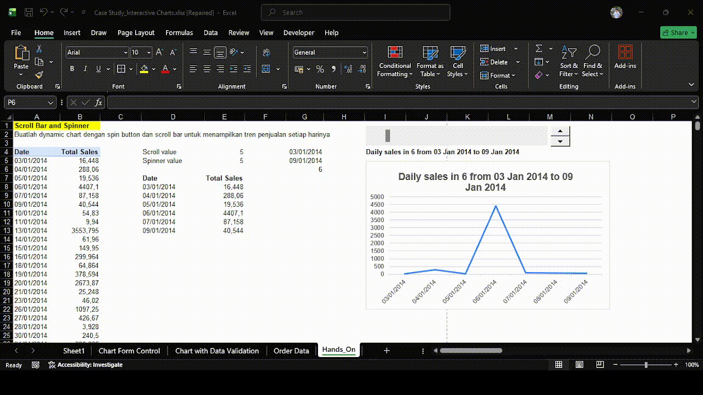
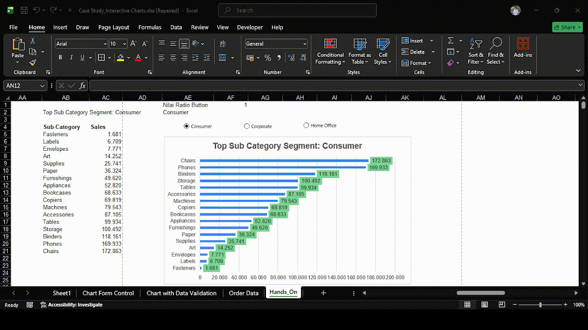
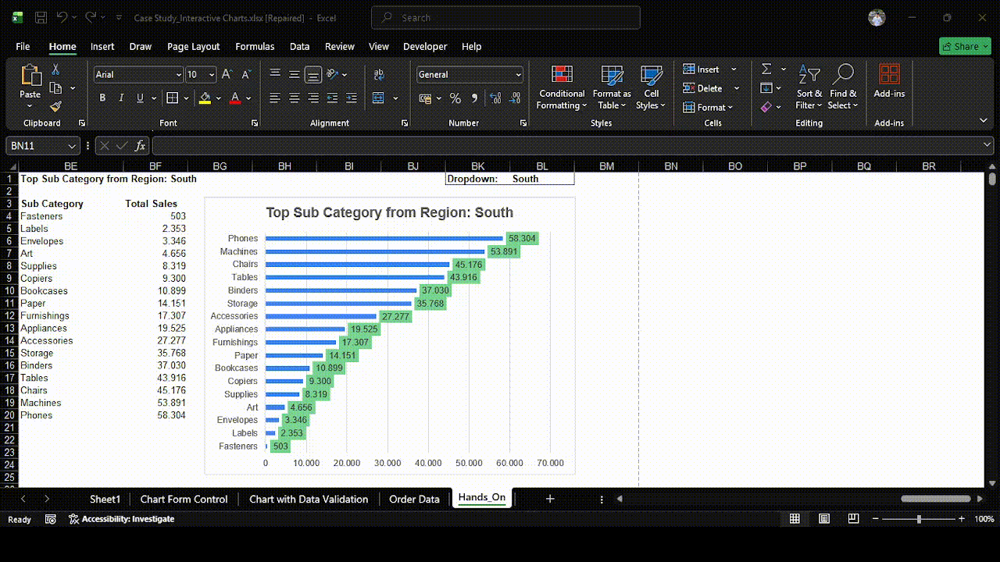

Portofolio Data Analyst
Membangun solusi analisis data yang interaktif dan mudah dipahami — dari Excel, SQL, Python hingga Power BI. Saat ini aktif mengembangkan portofolio sebagai Data Analyst.
Proyek — Excel
Membangun chart dinamis dan interaktif di Excel menggunakan fitur kontrol bawaan — tanpa VBA, langsung bisa digunakan oleh siapa saja untuk eksplorasi data yang intuitif.
Excel · Form Controls · Linked Cell
Dynamic range control dengan Scroll Bar & Spinner

Membangun chart interaktif yang memungkinkan pengguna menggeser atau memutar nilai untuk memperbarui tampilan data secara real-time — cocok untuk analisis tren harian dan perbandingan antar periode. Chart ini menampilkan Daily Sales dengan rentang tanggal yang dapat digeser menggunakan Scroll Bar, dan jumlah baris data yang ditampilkan bisa dikontrol via Spinner.
Excel · Form Controls · Radio Button · INDEX/MATCH
Toggle tampilan data dengan Option Button

Membuat chart yang bisa beralih antara beberapa kategori atau metrik cukup dengan satu klik — memberikan pengalaman eksplorasi data yang intuitif tanpa formula yang rumit. Chart ini menampilkan Top Sub Category per Segment (Consumer, Corporate, Home Office) yang berubah otomatis saat Option Button dipilih.
Excel · Data Validation · Dynamic Named Range
Dynamic chart dengan dropdown Data Validation

Mengintegrasikan dropdown list berbasis Data Validation untuk memfilter dan menampilkan data tertentu secara otomatis — solusi ringan namun profesional untuk dashboard sederhana. Chart ini menampilkan Top Sub Category per Region yang difilter langsung dari dropdown tanpa makro atau coding tambahan.